01
ACTIVE
SOC Operations
SIEM monitoring, detection engineering, incident response, threat hunting.
// 01 — OPERATIONS
Security Operations & Automation · eCIR · Building GRC Foundations
Securing operations today. Building governance foundations for tomorrow. Hands-on SOC experience, automated detection pipelines, and a clear path toward governance, risk, and compliance.
// 02 — PROFILE
Practical security today. Governance-focused thinking for tomorrow.
I'm a Security Operations & Automation engineer with a certified incident response background (eCIR), currently building my GRC foundations — bridging hands-on SOC experience with governance, risk, and compliance thinking.
My work spans SIEM engineering, SOAR automation, detection engineering, and active directory attack simulation. I believe the strongest security programs combine operational visibility with governance discipline.
SIEM monitoring, detection engineering, incident response, threat hunting.
n8n workflows, API integrations, automated incident response pipelines.
Risk assessment, ISO 27001 foundations, NIST CSF, security policies.
// 03 — CAPABILITIES
A focused, hands-on toolkit — with an honest look at what's still in progress.
// 04 — PROJECTS
Security labs, infrastructure builds, and automation pipelines — built to solve real problems.
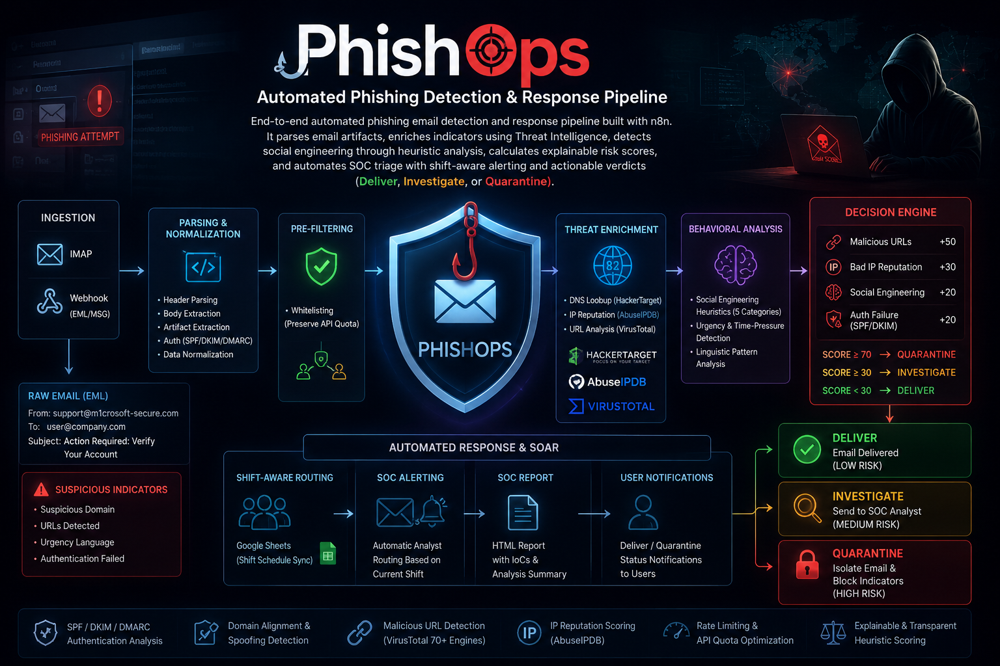
End-to-end automated phishing analysis pipeline with n8n. Parses email artifacts, enriches IoCs via threat intel, applies heuristic social engineering analysis, and automates SOC triage with shift-aware alerting and actionable verdicts (Deliver / Investigate / Quarantine).

Realistic AD lab simulating full Windows attack chain: Initial Access → Privilege Escalation → Credential Dumping → Lateral Movement. Includes custom Sigma rules mapped to MITRE ATT&CK and full ELK detection validation.
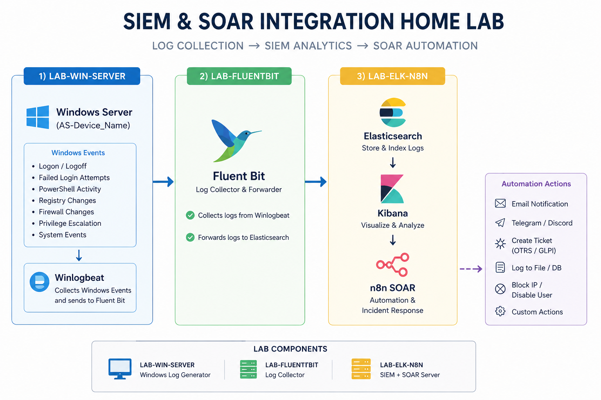
Built a complete SOC environment from scratch: ELK Stack, Fluent Bit, Winlogbeat, and n8n SOAR. Implemented log collection, detection engineering use cases, Windows event monitoring, and automated incident response workflows.

Multi-zoned virtual enterprise simulating full attack lifecycle. pfSense firewall, ELK Stack SIEM, n8n SOAR automation, Metasploitable3, bWAPP, and full Windows domain environment with intentionally vulnerable systems.
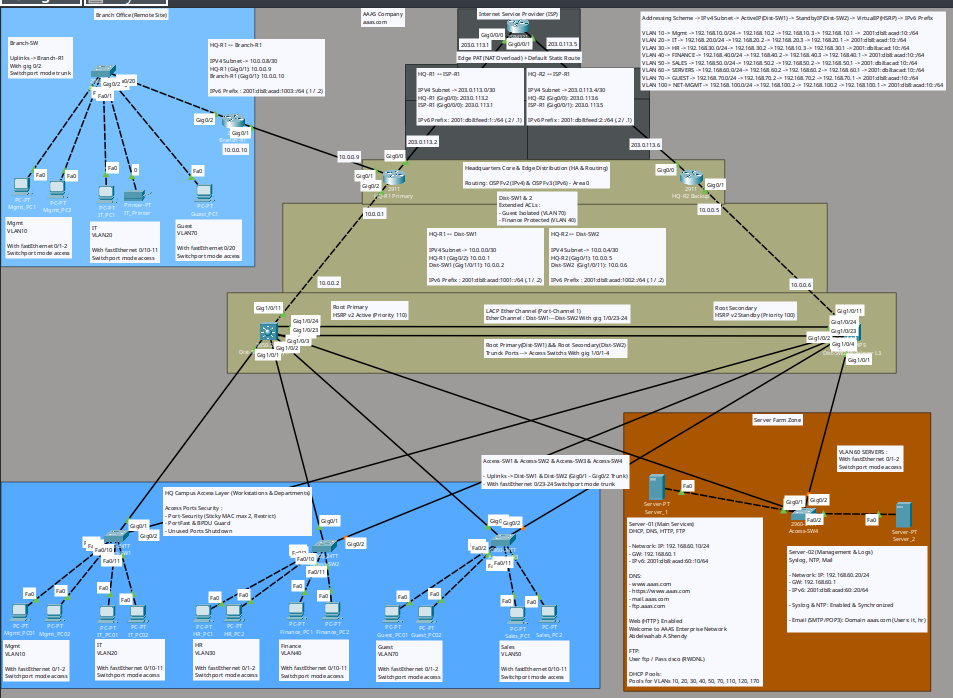
Full-scale enterprise campus + remote branch in Cisco Packet Tracer. Features HSRPv2 failover, LACP EtherChannel, OSPFv2/v3 dual-stack routing, centralized services, NAT/PAT, and defense-in-depth security hardening.

Comprehensive enterprise simulation with dual domain controllers, advanced GPO policies, DHCP failover, DNS round-robin, IIS HA, FSRM quotas, Hyper-V virtualization, and automated daily backups.


Full-featured cinema booking platform built with ASP.NET Core MVC on clean 3-tier architecture. Features role-based access, custom auth system (Claims), Stripe integration, global search, and admin dashboard.

Curated collection of programming challenges solved in C++, C#, and Python — covering algorithms, data structures, and problem-solving patterns.

Collection of small projects demonstrating Object-Oriented Programming concepts in C# and C++ — inheritance, polymorphism, encapsulation, and design patterns.

Practical examples of designing ERD & EERD diagrams, converting them to relational schemas, and implementing them with SQL — including normalization and constraint enforcement.
Try adjusting your search or filter.
// 05 — JOURNEY
Professional experience and continuous development.
Built ELK log pipelines (Winlogbeat, Filebeat, Fluent Bit, Logstash) for Windows/Linux. Developed n8n SOAR automations for security operations, data retention, and vulnerability remediation. Performed detection engineering through AD attack simulations, Sigma rule development, and MITRE ATT&CK mapping.
Led a 6-person team to design and deliver "Smart BI" — an automated Business Intelligence pipeline combining n8n workflows, LLM integration, and secure development. Recognized as Best Graduation Project in the BIS Department and featured in El Masry El Aan.
Built full SOC environment: ELK Stack SIEM + n8n SOAR, threat hunting, incident response, PCAP analysis.
22 hands-on labs: information gathering, vulnerability assessment, web security, exploitation, post-exploitation, final CTF.
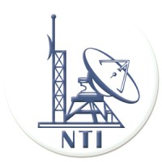
Windows Server, Active Directory, Group Policy, DHCP/DNS, failover clustering, disaster recovery concepts.
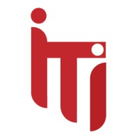
Computer networks, routing & switching, network security fundamentals, ethical hacking basics, Huawei Cloud (HCCDA).
C#, ASP.NET Core, SQL Server, Entity Framework, MVC, 3-Tier Architecture, and SOLID principles.
CyberOps, threat & vulnerability management, incident response, malware analysis fundamentals, QRadar SIEM.
CCNA, CEH, Palo Alto, FortiGate, network security fundamentals. Served as team leader during group activities.
Networking, Linux, programming, and cybersecurity fundamentals through hands-on labs and CTF challenges.
// 06 — CREDENTIALS
Industry certifications, honors, and recognized achievements.
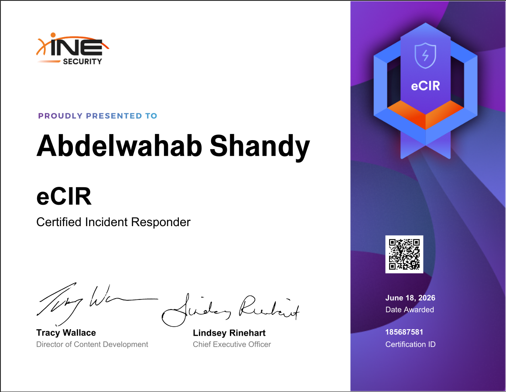
Practical DFIR certification covering incident response, SIEM operations, PCAP analysis, and forensics fundamentals.
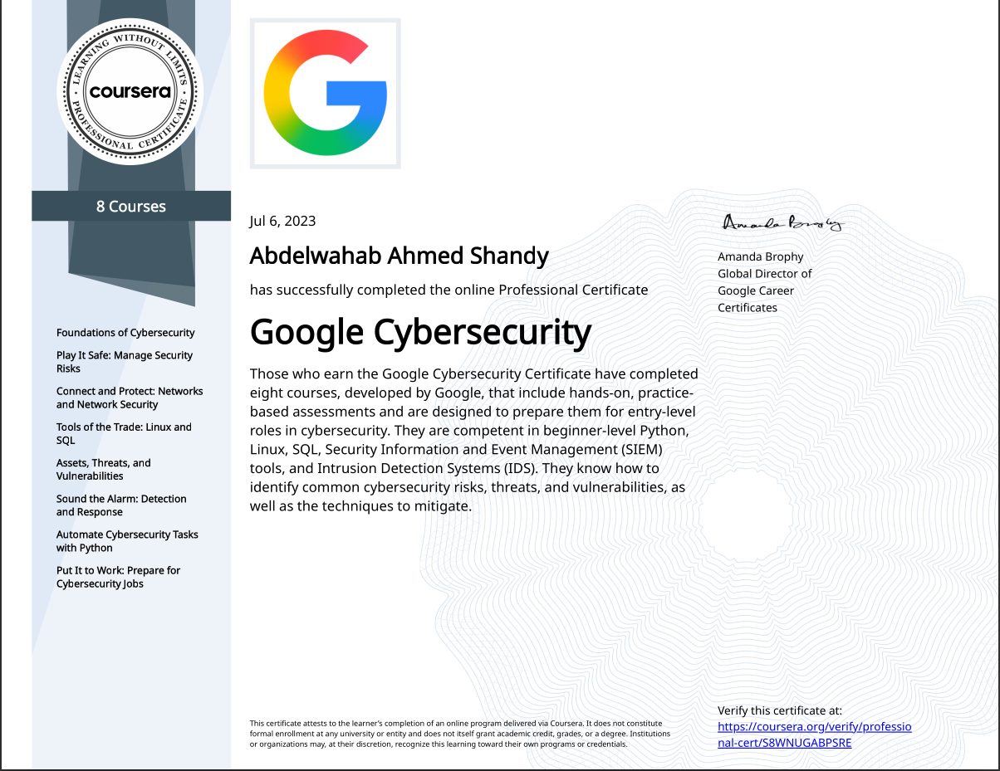
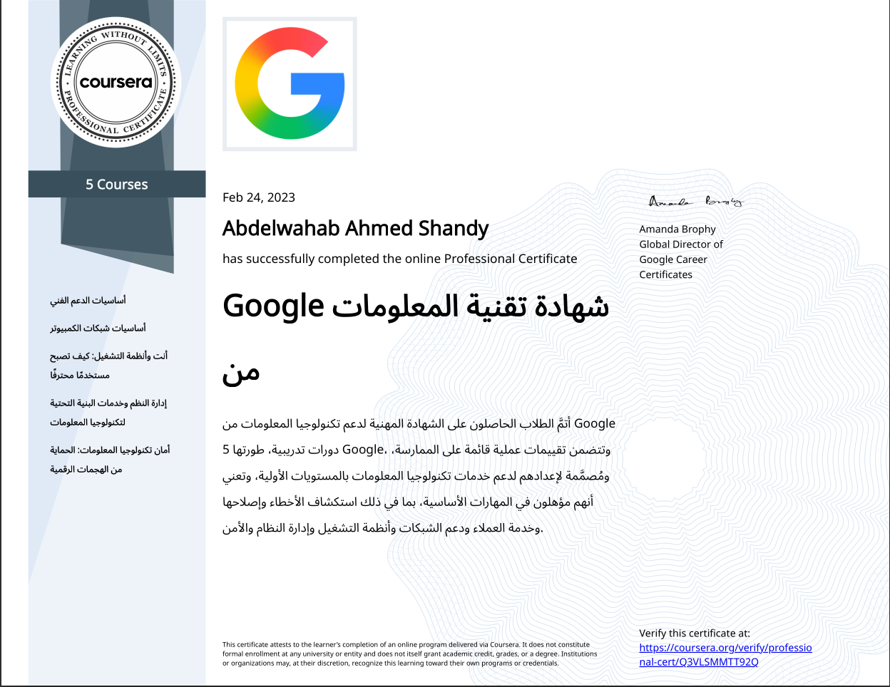
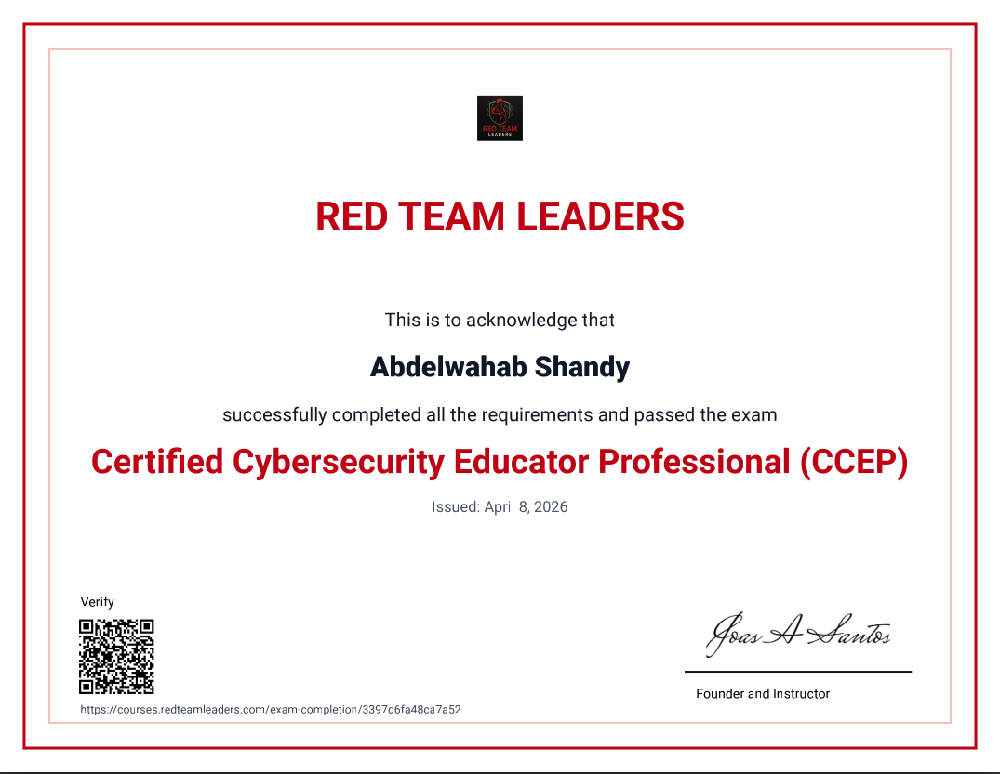
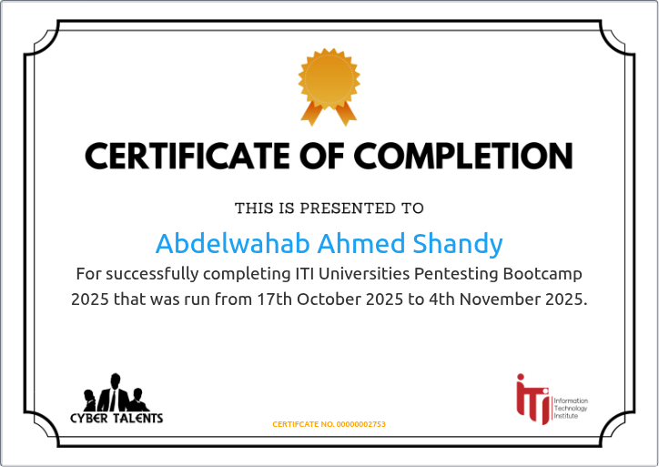
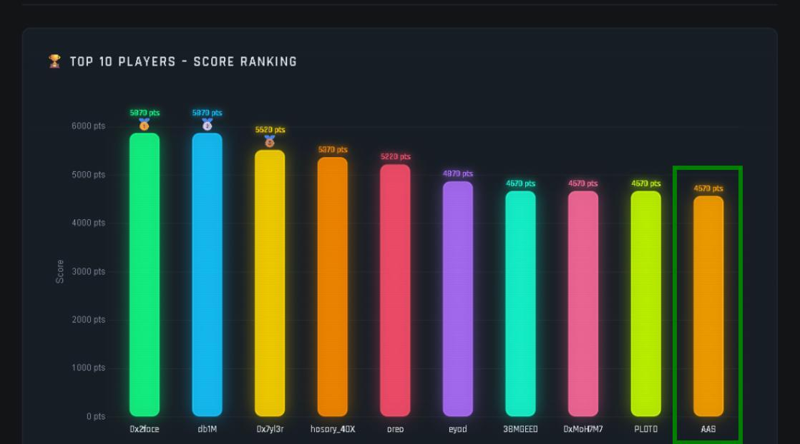
72-hour Capture The Flag competition organized by Google Developer Groups (GDG) — solved offensive security challenges under time pressure, ranked in the top 10 out of 106 participants.
// 07 — WRITE-UPS
Official platform solutions, technical deep-dives, and CTF walkthroughs.
CyberDefenders · Threat Hunting & SIEM Investigation
Read on MediumCyberDefenders · Network Forensics & Keylogger Analysis
Read on MediumCyberDefenders · Network Forensics & Lateral Movement
Read on HashnodeCyberDefenders · Threat Intelligence & OSINT
Read on HashnodeHashnode · Technical Deep-dive on Memory Management
Read on Hashnode40+ write-ups across CyberDefenders, LetsDefend, BTLO, CTF Learn, picoCTF, and more.
Explore All// 08 — OPEN CHANNEL
Open to SOC Analyst, Security Automation, and GRC-related opportunities. Also available for technical collaborations, research, and community contributions.